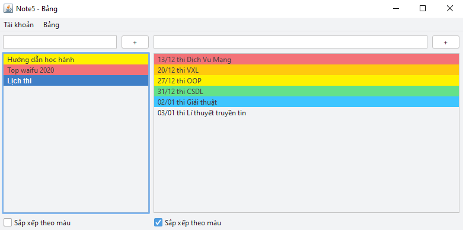
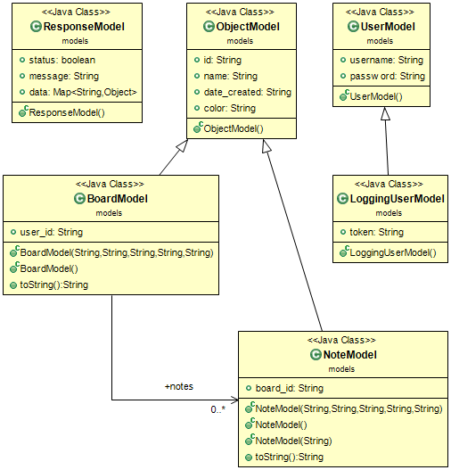
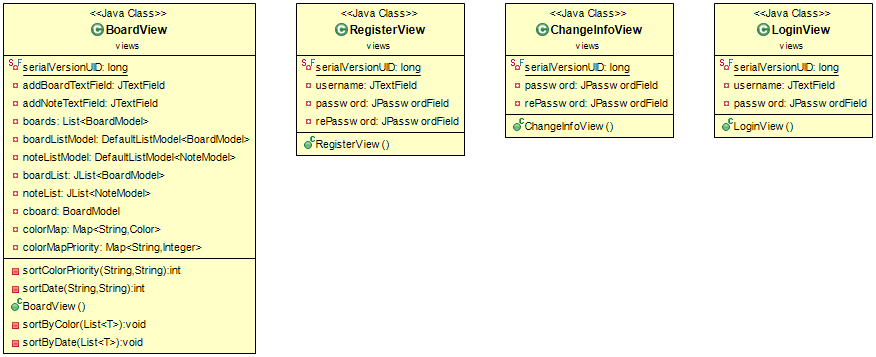
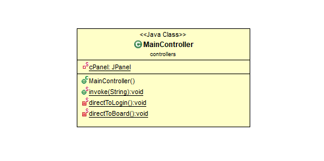

Made by

Đề tài thuyết trình:
Ứng dụng ghi chú trong thời kì 4.0
Nhóm 5
Giảng viên phụ trách: Bùi Hữu Đông
Sinh viên thực hiện: Ngô Quang Sang - CT030343 & Nguyễn Thành Tiến - AT150849
Tại sao?
1. Môi trường sống thời hiện đại
- Phải xử lí nhiều tác vụ (multi-tasking)
- Yêu cầu nạp nhiều thông tin trong ngày
2. Não bộ con người
- Vùng nhớ ngắn hạn (short-term memory) và vùng nhớ dài hạn (long-term memory)
- Con người quên gần 40% thông tin mới trong vòng 24 giờ đầu tiên đọc hoặc nghe nó
Ghi chú là một kỹ năng cần thiết để sinh tồn và phát triển trong cuộc sống hiện đại
Ghi chú là gì?
- Là hành động ghi lại vào những nơi có thể lưu trữ những thông tin cần thiết nạp vào từ những nguồn khác một cách có sàn lọc và chủ đích
- Là một kỹ năng giúp ghi chép lại các thông tin cần thiết để ghi nhớ
Sổ ghi chép và mảnh giấy note là những công cụ ghi chú
Những người ghi chú thành công
"Tôi có hàng chục cuốn sổ ghi chép mỗi năm và ghi lại mọi thứ xảy ra với tôi mỗi ngày. Một ý tưởng không được viết ra là một ý tưởng bị mất đi. Khi cảm hứng lóe lên trong đầu, bạn phải nắm lấy nó" - Richard Branson
- Nhiều vị trí cao cũng cần đến kỹ năng ghi chú
Thomas Edison
Bill Gates
George Lucas
Tim Ferriss
Những tiêu biểu khác như: Ernest Hemingway, Mark Twain, Pablo Picasso, Sheryl Sandberg, J.K. Rowling, Bruce Springsteen, Aaron Sorkin,...
Lợi ích của việc ghi chú
- Giải phóng khỏi tình trạng quá tải thông tin
- Lắng nghe tốt hơn
- Giúp mọi thứ thực tế hơn
- Nắm bắt thông tin quan trọng
- Trở thành người đọc hiệu quả hơn
- Cải thiện trí nhớ
- Sắp xếp suy nghĩ tốt hơn
- Cải thiện sự chú ý
- Động lực đạt được mục tiêu
Ghi chú trong thời đại 4.0
Ghi chú trong thời đại 4.0
- Nhiều công cụ ghi chú xuất hiện thay thế cho cuốn sổ tay và cây bút bi truyền thống
Google Tasks
Google Keep
Sticky Notes
Microsoft To Do
Microsoft
OneNote
Kết luận
Ghi chú là một thói quen đóng một vai trò quan trọng trong cuộc sống hiện đại
Giúp chúng ta tiết kiệm được rất nhiều thời gian trong một cuộc sống
Ứng dụng Note5
Ứng dụng Note5
Mô hình sử dụng: MVC
| M | Model |
| V | View |
| C | Controller |
Diagram
Models
Views
Controller
DEMO
Kết thúc
Cám ơn các bạn đã theo dõi